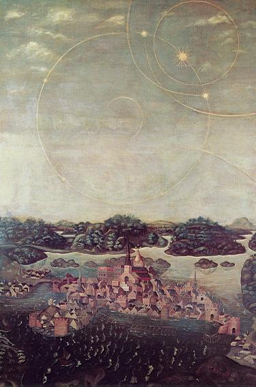

|
Utförd 1535 möjligen av Urban Målare, på föranstaltande av Olaus Petri och myntmästaren Anders Hansson. Oljemålning. Stockholms Storkyrka. Den första mer verklighetsbetonade totalbilden över Stockholm och en av de första svenska landskapsvyerna är den s. k. Vädersolstavlan i Stockholms Storkyrka, utförd 1535 till åminnelse av ett »tecken i skyn». Detta tecken upprörde många, som däri såg ett hot om himmelens straffdom över Gustaf Vasa och hans medhjälpare, vilka farit så ovarsamt fram med katolska kyrkans män och dess ägodelar. Gustav Vasa irriterades över detta, och irritationen blev ej mindre av att den katolska propagandan gjorde sitt bästa att förstora betydelsen av det skådade himlafenomenet. Detta hade visat sig för allt folket i Stockholms stad en klar aprilförmiddag år 1535 och bestod av fem s. k. vädersolar vilka i glänsande färger kretsade kring den riktiga solen. En stor norrskensliknande ljuscirkel bildades, som skars av flera yttre ljusgårdar. Det hela pågick i ett par timmar, tillräckligt för att uppskrämda människor i tusental skulle söka sig till kyrkorna för att undgå Guds straffdom. För vetenskapen är detta s. k. halofenomen ingenting ovanligt, även om det måste erkännas att »manifestationen» över Stockholm denna dag troligen var av sällsynt kraft. I själva verket rör det sig om en ljusbrytning, som ger illusionen dels av en väldig ljusring kring solen, eller månen, dels bisolar eller bimånar, alternativt större ringar, cirklar, bågar, ja, t. o. m. kors. Olaus Petri lät förfärdiga en tavla över fenomenet, vilken hängdes upp i Storkyrkan. |

Vädersolstavlan förvaras fortfarande i Storkyrkan. Texten lyder: »Anno Domini 1535. Den tjugonde april ungefär från klockan sju till nio förmiddagen syntes i Stockholm på himmelen sådana tecken. Taflan har renoverats anno 1636, 1885, 1907.» |